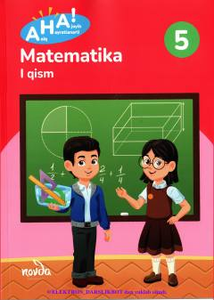

5M5-sinf o'quvchilari uchun matematika fanidan 1-qism darslik.
Mazkur darslik umumiy o'rta ta'lim maktablarining 5-sinf o'quvchilari uchun mo'ljallangan bo'lib, matematika fanidan boshlang'ich tushunchalar, natural sonlar va sonlar ustida to'rt amalni o'rgatadi. Kitob o'quvchilarning mantiqiy fikrlashi va amaliy ko'nikmalarini rivojlantirishga qaratilgan.